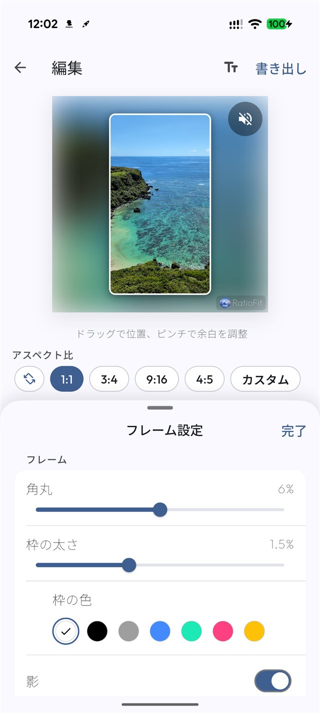
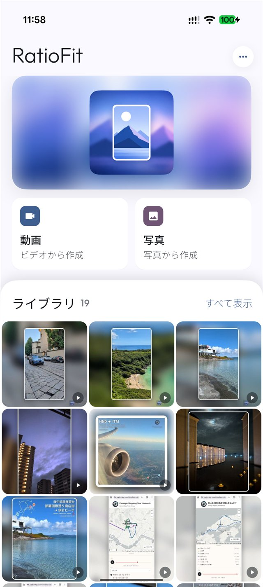
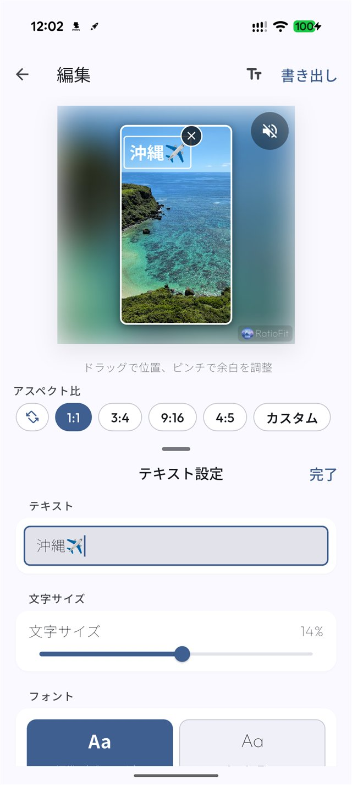

好きな比率へ
1:1・3:4・4:5・9:16・4:3・16:9・5:4に対応。カスタム比率も指定できます。
A LITTLE ROOM FOR EVERY MEMORY
写真も動画も切り抜かずにSNSサイズへ。
ぼかしや好きな色で余白を整えて
旅の思い出をまるごと届けよう。
写真・動画や編集データは端末内で処理。運営者がその内容を閲覧・取得することはできません。

01 / A LITTLE MORE ROOM
投稿先に合わせて比率を変えるだけ。元の写真や動画を保ったまま足りない部分を余白で補います。
比率のイメージです。実際の調整はアプリで行えます。
02 / YOUR EVERYDAY KIT
リールもストーリーも旅のアルバムも。ちょうどいいかたちに整える道具をそろえました。
1:1・3:4・4:5・9:16・4:3・16:9・5:4に対応。カスタム比率も指定できます。
元のメディアを使ったぼかし背景や単色背景を選択。プリセットのほかHSV・HEXで色を細かく決められます。
ドラッグで位置を変えてピンチで余白を調整。動画は解像度や音声を選んで書き出せます。
角丸・枠線・影・文字入れに対応。投稿に合う見た目へ細かく整えられます。
作成した画像や動画はアプリ内ライブラリへ。端末に保存したりAndroidの共有メニューで送ったりできます。
写真・動画そのものをPATHのサーバーへアップロードしません。編集処理は端末内で完結します。
03 / FROM GALLERY TO GO
ギャラリーから投稿まで3ステップ。プレビューを見ながら気軽に調整できます。
ギャラリーまたはAndroidの共有メニューから読み込みます。作成したメディアはライブラリから確認できます。

比率・余白・位置・背景・フレームをプレビューで確認。9:16や1:1など投稿先に合わせて仕上げます。
画質や音声を選んで端末に保存。Instagram・YouTube・TikTokなどへ投稿できます。

04 / YOUR OWN SPACE
運営者が写真・動画やアプリの内部データを見ることはできません。編集処理は端末内で行います。
利用状況の改善に必要な集計イベントは扱いますが、写真・動画の内容、ファイル名、ファイルパス、編集内容・編集値、共有先、アプリ内ライブラリの内容はFirebase Analyticsへ送信されません。
プライバシーポリシーを確認GOOD TO KNOW
はい。元動画の縦横比を保ったまま足りない領域にぼかし背景または単色背景を加えて9:16へ整えられます。
はい。1:1・3:4・4:5・9:16・4:3・16:9・5:4に加えてカスタム比率も指定できます。
RatioFitの編集処理は端末内で行います。写真・動画そのものをPATHのサーバーへアップロードしません。